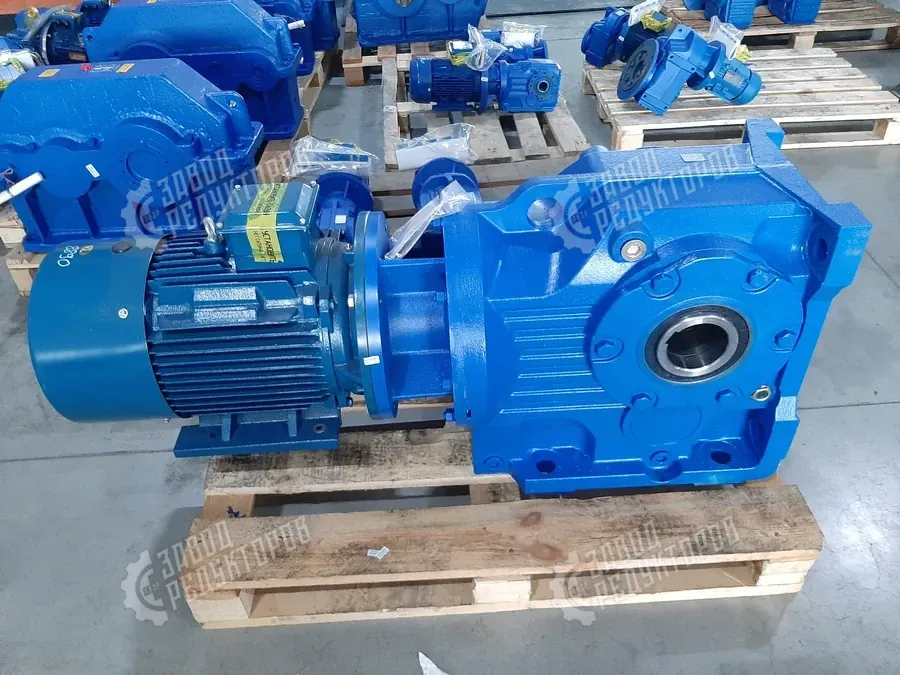

Редуктор для пищевого производства работает в особых условиях: ежесменная мойка под напором, моющие и дезинфицирующие средства, влага, перепады температур и санитарные требования к узлам рядом с продуктом. Обычный промышленный привод здесь корродирует и течёт быстрее расчётного срока. Разберём, какие требования предъявляют к приводу на пищевом предприятии и как правильно подобрать мотор-редуктор пищевой под конкретное оборудование.
Главное отличие пищевого привода от общепромышленного — он постоянно контактирует с влагой и агрессивной химией мойки. Из этого вытекают требования:

На пищевом предприятии редуктор ставят почти на каждый механизм с вращением. Подбор зависит от типа машины:
Тип редуктора задаётся расположением валов и требованиями к оборотам, а исполнение — условиями санитарной зоны. Цилиндрические приводы дают высокий КПД и хорошо держат длительную нагрузку — это база для конвейеров и месильного оборудования. Червячные компактны, обеспечивают большое передаточное число и самоторможение, что удобно для дозаторов и тихоходных узлов. Соосно-цилиндрические экономят место там, где вход и выход должны быть на одной оси.
По исполнению решают три вопроса: степень защиты двигателя под мойку, антикоррозийное покрытие корпуса (либо нержавеющее исполнение для прямого контакта с продуктом) и тип смазки. Для большинства участков достаточно стойкого покрытия и пищевого масла; нержавейку берут точечно — там, где этого требует санитарная зона.

В приводе рядом с продуктом применяют масло и консистентную смазку пищевого класса (категории H1) — на случай случайного контакта со средой. Такие масла рассчитаны на работу в условиях влаги и регулярной мойки, не теряют свойств при перепадах температуры и не загрязняют продукт. Подбор вязкости и интервалы замены зависят от нагрузки и температуры узла — что именно учитывать, разобрано в материале о том, какое масло заливать в редуктор. Важно не путать пищевое масло с обычным индустриальным: на участках контакта с продуктом используют только смазку с пищевым допуском.
Подбор идёт по тем же силовым параметрам, что и для любого привода, плюс санитарные требования зоны:
Готовый расчёт и стоимость удобно уточнить через подбор редуктора, а ориентир по бюджету — на странице цен. Если меняете импортный пищевой привод, инженер подберёт габаритный и присоединительный аналог с нужным исполнением.
| Силовые данные | мощность, момент на выходе, обороты, режим |
|---|---|
| Зона установки | «мокрая» у мойки или сухой участок |
| Защита | класс IP двигателя под мойку под давлением |
| Коррозия | антикоррозийное покрытие или нержавеющее исполнение |
| Смазка | пищевое масло класса H1 при контакте с продуктом |
| Монтаж | тип, присоединительные размеры, положение вала |
Редуктор для пищевого производства выбирают не только по моменту и оборотам, но и по условиям санитарной зоны: мойке, влаге, коррозии и требованиям к смазке. Для большинства участков достаточно привода со стойким покрытием, повышенной защитой двигателя и пищевым маслом; нержавеющее исполнение берут там, где это действительно нужно. Опишите оборудование и зону установки — инженер Завода Редукторов рассчитает подбор и подскажет оптимальное исполнение мотор-редуктора пищевого под вашу задачу.
Нержавеющий корпус оправдан в зонах прямого контакта с продуктом, при агрессивной химической мойке и постоянной влажности. На большинстве участков достаточно привода со стойким антикоррозионным покрытием и повышенной защитой — это заметно дешевле. Опишите зону установки, и инженер подскажет, нужна ли вам именно нержавейка или хватит мытьевого исполнения.
Мытьевое исполнение рассчитано на регулярную мойку струёй воды и моющими растворами: гладкое стойкое покрытие, усиленные уплотнения и защита двигателя от влаги. Обычный редуктор такие условия переносит хуже и быстрее ржавеет. Для пищевых линий с ежедневной санитарной обработкой washdown-вариант мы рекомендуем по умолчанию.
Масло H1 нужно там, где возможен случайный контакт смазки с продуктом — это допуск на непредвиденный пищевой контакт. Мы комплектуем редукторы пищевым маслом H1 при заказе под такие зоны. Если контакта с продуктом нет, допускается обычная индустриальная смазка — это решается по месту установки привода.
Для участков с регулярной мойкой берут двигатель с защитой не ниже IP65, а при мойке под давлением — IP66 или IP69K. Это защищает обмотки и подшипниковые узлы от направленной струи воды и пара. Мы подберём двигатель с нужным классом IP под интенсивность мойки на вашей линии.
Тип зависит от компоновки: соосно-цилиндрический для осевого монтажа, плоский с полым валом — когда привод надевается прямо на вал механизма, коническо-цилиндрический — при валах под углом 90°. Червячные ставят там, где нужно самоторможение и компактность. Пришлите схему узла — подберём тип под ваше место установки.
Гигиеничный привод — это гладкие поверхности без карманов, где задерживается грязь, минимум открытых рёбер и стойкое покрытие без сколов. Это снижает риск скоплений и облегчает санитарную обработку. Полностью бесшовное hygienic-исполнение с особой геометрией поставляем под заказ, когда этого требует регламент производства.
Пришлите модель, шильд или опишите задачу — рассчитаем подбор и пришлём КП в течение 15 минут.
Оставить заявку